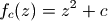
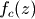
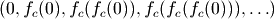
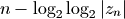
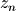

分形与混沌¶
自然界的很多事物，例如树木、云彩、山脉、闪电、雪花以及海岸线等等都呈现出传统的几何学不能描述的形状。这些形状都有如下的特性：
- 有着十分精细的不规则的结构
- 整体与局部相似，例如一根树杈的形状和一棵树很像
分形几何学就是用来研究这样一类的几何形状的科学，借助计算机的高速计算和图像显示，使得我们可以更加深入地直观地观察分形几何。在本章中，让我们用Python绘制一些经典的分形图案。
Mandelbrot集合¶
Mandelbrot(曼德布洛特)集合是在复平面上组成分形的点的集合。
Mandelbrot集合的定义(摘自维基百科)
Mandelbrot集合可以用下面的复二次多项式定义：

其中c是一个复参数。对于每一个c，从z=0开始对函数  进行迭代。
序列  的值或者延伸到无限大，或者只停留在有限半径的圆盘内。
Mandelbrot集合就是使以上序列不发散的所有c点的集合。
从数学上来讲，Mandelbrot集合是一个复数的集合。一个给定的复数c或者属于Mandelbrot集合，或者不是。
用程序绘制Mandelbrot集合时不能进行无限次迭代，最简单的方法是使用逃逸时间(迭代次数)进行绘制，具体算法如下：
- 判断每次调用函数 得到的结果是否在半径R之内，即复数的模小于R
- 记录下模大于R时的迭代次数
- 迭代最多进行N次
- 不同的迭代次数的点使用不同的颜色绘制
下面是完整的绘制Mandelbrot集合的程序：
# -*- coding: utf-8 -*-
import numpy as np
import pylab as pl
import time
from matplotlib import cm
def iter_point(c):
z = c
for i in xrange(1, 100): # 最多迭代100次
if abs(z)>2: break # 半径大于2则认为逃逸
z = z*z+c
return i # 返回迭代次数
def draw_mandelbrot(cx, cy, d):
"""
绘制点(cx, cy)附近正负d的范围的Mandelbrot
"""
x0, x1, y0, y1 = cx-d, cx+d, cy-d, cy+d
y, x = np.ogrid[y0:y1:200j, x0:x1:200j]
c = x + y*1j
start = time.clock()
mandelbrot = np.frompyfunc(iter_point,1,1)(c).astype(np.float)
print "time=",time.clock() - start
pl.imshow(mandelbrot, cmap=cm.Blues_r, extent=[x0,x1,y0,y1])
pl.gca().set_axis_off()
x,y = 0.27322626, 0.595153338
pl.subplot(231)
draw_mandelbrot(-0.5,0,1.5)
for i in range(2,7):
pl.subplot(230+i)
draw_mandelbrot(x, y, 0.2**(i-1))
pl.subplots_adjust(0.02, 0, 0.98, 1, 0.02, 0)
pl.show()
Mandelbrot集合，以5倍的倍率放大点(0.273, 0.595)附近
程序中的iter_point函数计算点c的逃逸时间，逃逸半径R为2.0，最大迭代次数为100。draw_mandelbrot函数绘制以点(cx, cy)为中心，边长为2*d的正方形区域内的Mandelbrot集合。
下面3行计算指定范围内的迭代公式的参数c，c是一个元素为复数的二维数组，大小为200*200，注意np.ogrid不是函数：
x0, x1, y0, y1 = cx-d, cx+d, cy-d, cy+d
y, x = np.ogrid[y0:y1:200j, x0:x1:200j]
c = x + y*1j
下面一行程序通过调用np.frompyfunc将iter_point转换为NumPy的ufunc函数，这样它可以自动对c中的每个元素调用iter_point函数，由于结果的数组元素类型为object，还需要调用astype方法将其元素类型转换为浮点类型：
mandelbrot = np.frompyfunc(iter_point,1,1)(c).astype(np.float)
最后调用matplotlib的imshow函数将结果数组绘制成图，通过cmap关键字参数指定图的值和颜色的映射表：
pl.imshow(mandelbrot, cmap=cm.Blues_r, extent=[x0,x1,y0,y1])
使用Python绘制Mandelbrot集合最大的问题就是运算速度太慢，下面是上面每幅图的计算时间：
time= 0.88162629608
time= 1.53712748408
time= 1.71502160191
time= 1.8691174437
time= 3.03812691278
因为计算每个点的逃逸时间均不相同，因此每幅图的计算时间也不相同。
计算速度慢的最大的原因是因为iter_point函数的运算速度慢，如果将此函数用C语言重写的话将能显著地提高计算速度，下面使用scipy.weave库将C++重写的iter_point函数转换为Python能调用的函数：
import scipy.weave as weave
def weave_iter_point(c):
code = """
std::complex<double> z;
int i;
z = c;
for(i=1;i<100;i++)
{
if(std::abs(z) > 2) break;
z = z*z+c;
}
return_val=i;
"""
f = weave.inline(code, ["c"], compiler="gcc")
return f
下面是使用weave_iter_point函数计算Mandelbrot集合的时间：
time= 0.285266982256
time= 0.271430028118
time= 0.293769180161
time= 0.308515188383
time= 0.411168179196
通过NumPy的数组运算也可以提高计算速度，前面的计算都是先对复数平面上的每个点进行循环，然后再循环迭代计算每个点的逃逸时间。如果要用NumPy的数组运算加速计算的话，可以将这两个循环的顺序颠倒过来，下面的程序演示这一算法：
# -*- coding: utf-8 -*-
import numpy as np
import pylab as pl
import time
from matplotlib import cm
def draw_mandelbrot(cx, cy, d, N=200):
"""
绘制点(cx, cy)附近正负d的范围的Mandelbrot
"""
global mandelbrot
x0, x1, y0, y1 = cx-d, cx+d, cy-d, cy+d
y, x = np.ogrid[y0:y1:N*1j, x0:x1:N*1j]
c = x + y*1j
# 创建X,Y轴的坐标数组
ix, iy = np.mgrid[0:N,0:N]
# 创建保存mandelbrot图的二维数组，缺省值为最大迭代次数
mandelbrot = np.ones(c.shape, dtype=np.int)*100
# 将数组都变成一维的
ix.shape = -1
iy.shape = -1
c.shape = -1
z = c.copy() # 从c开始迭代，因此开始的迭代次数为1
start = time.clock()
for i in xrange(1,100):
# 进行一次迭代
z *= z
z += c
# 找到所有结果逃逸了的点
tmp = np.abs(z) > 2.0
# 将这些逃逸点的迭代次数赋值给mandelbrot图
mandelbrot[ix[tmp], iy[tmp]] = i
# 找到所有没有逃逸的点
np.logical_not(tmp, tmp)
# 更新ix, iy, c, z只包含没有逃逸的点
ix,iy,c,z = ix[tmp], iy[tmp], c[tmp],z[tmp]
if len(z) == 0: break
print "time=",time.clock() - start
pl.imshow(mandelbrot, cmap=cm.Blues_r, extent=[x0,x1,y0,y1])
pl.gca().set_axis_off()
x,y = 0.27322626, 0.595153338
pl.subplot(231)
draw_mandelbrot(-0.5,0,1.5)
for i in range(2,7):
pl.subplot(230+i)
draw_mandelbrot(x, y, 0.2**(i-1))
pl.subplots_adjust(0.02, 0, 0.98, 1, 0.02, 0)
pl.show()
为了减少计算次数，程序中每次迭代之后，都将已经逃逸的点剔除出去，这样就需要保存每个点的下标，程序中用ix和iy这两个数组来保存没有逃逸的点的下标，因为有额外的数组保存下标，因此数组z和c不需要是二维的。函数迭代部分的程序如下：
# 进行一次迭代
z *= z
z += c
使用 *=, += 这样的运算符能够让NumPy不分配额外的空间直接在数组z上进行运算。
下面的程序计算出逃逸点，tmp是逃逸点在z中的下标，由于z和ix和iy等数组始终是同时更新的，因此ix[tmp], iy[tmp]就是逃逸点在图像中的下标：
# 找到所有结果逃逸了的点
tmp = np.abs(z) > 2.0
# 将这些逃逸点的迭代次数赋值给mandelbrot图
mandelbrot[ix[tmp], iy[tmp]] = i
最后通过对tmp中的每个元素取逻辑反，更新所有没有逃逸的点的对应的ix, iy, c, z：
# 找到所有没有逃逸的点
np.logical_not(tmp, tmp)
# 更新ix, iy, c, z只包含没有逃逸的点
ix,iy,c,z = ix[tmp], iy[tmp], c[tmp], z[tmp]
此程序的计算时间如下：
time= 0.186070576008
time= 0.327006365334
time= 0.372756034636
time= 0.410074464771
time= 0.681048289658
time= 0.878626752841
连续的逃逸时间¶
修改逃逸半径R和最大迭代次数N，可以绘制出不同效果的Mandelbrot集合图案。但是前面所述的方法计算出的逃逸时间是大于逃逸半径时的迭代次数，因此所输出的图像最多只有N种不同的颜色值，有很强的梯度感。为了在不同的梯度之间进行渐变处理，使用下面的公式进行逃逸时间计算：

 是迭代n次之后的结果，通过在逃逸时间的计算中引入迭代结果的模值，结果将不再是整数，而是平滑渐变的。
下面是计算此逃逸时间的程序：
def smooth_iter_point(c):
z = c
for i in xrange(1, iter_num):
if abs(z)>escape_radius: break
z = z*z+c
absz = abs(z)
if absz > 2.0:
mu = i - log(log(abs(z),2),2)
else:
mu = i
return mu # 返回正规化的迭代次数
如果你的逃逸半径设置得很小，例如2.0，那么有可能结果不够平滑，这时可以在迭代循环之后添加几次迭代保证z能够足够逃逸，例如：
z = z*z+c
z = z*z+c
i += 2
下图是逃逸半径为10，最大迭代次数为20时，绘制的结果：
逃逸半径=10，最大迭代次数=20的平滑处理后的Mandelbrot集合
逃逸时间公式是如何得出的？
完整的程序请参考 绘制Mandelbrot集合
迭代函数系统(IFS)¶
迭代函数系统是一种用来创建分形图案的算法，它所创建的分形图永远是绝对自相似的。下面我们直接通过绘制一种蕨类植物的叶子来说明迭代函数系统的算法：
有下面4个线性函数将二维平面上的坐标进行线性映射变换：
1.
x(n+1）= 0
y(n+1) = 0.16 * y(n)
2.
x(n+1) = 0.2 * x(n) − 0.26 * y(n)
y(n+1) = 0.23 * x(n) + 0.22 * y(n) + 1.6
3.
x(n+1) = −0.15 * x(n) + 0.28 * y(n)
y(n+1) = 0.26 * x(n) + 0.24 * y(n) + 0.44
4.
x(n+1) = 0.85 * x(n) + 0.04 * y(n)
y(n+1) = −0.04 * x(n) + 0.85 * y(n) + 1.6
所谓迭代函数是指将函数的输出再次当作输入进行迭代计算，因此上面公式都是通过坐标 x(n),y(n) 计算变换后的坐标 x(n+1),y(n+1)。现在的问题是有4个迭代函数，迭代时选择哪个函数进行计算呢？我们为每个函数指定一个概率值，它们依次为1%, 7%, 7%和85%。选择迭代函数时使用通过每个函数的概率随机选择一个函数进行迭代。上面的例子中，第四个函数被选择迭代的概率最高。
最后我们从坐标原点(0,0)开始迭代，将每次迭代所得到的坐标绘制成图，就得到了叶子的分形图案。下面的程序演示这一计算过程：
# -*- coding: utf-8 -*-
import numpy as np
import matplotlib.pyplot as pl
import time
# 蕨类植物叶子的迭代函数和其概率值
eq1 = np.array([[0,0,0],[0,0.16,0]])
p1 = 0.01
eq2 = np.array([[0.2,-0.26,0],[0.23,0.22,1.6]])
p2 = 0.07
eq3 = np.array([[-0.15, 0.28, 0],[0.26,0.24,0.44]])
p3 = 0.07
eq4 = np.array([[0.85, 0.04, 0],[-0.04, 0.85, 1.6]])
p4 = 0.85
def ifs(p, eq, init, n):
"""
进行函数迭代
p: 每个函数的选择概率列表
eq: 迭代函数列表
init: 迭代初始点
n: 迭代次数
返回值： 每次迭代所得的X坐标数组， Y坐标数组， 计算所用的函数下标
"""
# 迭代向量的初始化
pos = np.ones(3, dtype=np.float)
pos[:2] = init
# 通过函数概率，计算函数的选择序列
p = np.add.accumulate(p)
rands = np.random.rand(n)
select = np.ones(n, dtype=np.int)*(n-1)
for i, x in enumerate(p[::-1]):
select[rands<x] = len(p)-i-1
# 结果的初始化
result = np.zeros((n,2), dtype=np.float)
c = np.zeros(n, dtype=np.float)
for i in xrange(n):
eqidx = select[i] # 所选的函数下标
tmp = np.dot(eq[eqidx], pos) # 进行迭代
pos[:2] = tmp # 更新迭代向量
# 保存结果
result[i] = tmp
c[i] = eqidx
return result[:,0], result[:, 1], c
start = time.clock()
x, y, c = ifs([p1,p2,p3,p4],[eq1,eq2,eq3,eq4], [0,0], 100000)
print time.clock() - start
pl.figure(figsize=(6,6))
pl.subplot(121)
pl.scatter(x, y, s=1, c="g", marker="s", linewidths=0)
pl.axis("equal")
pl.axis("off")
pl.subplot(122)
pl.scatter(x, y, s=1,c = c, marker="s", linewidths=0)
pl.axis("equal")
pl.axis("off")
pl.subplots_adjust(left=0,right=1,bottom=0,top=1,wspace=0,hspace=0)
pl.gcf().patch.set_facecolor("white")
pl.show()
程序中的ifs函数是进行函数迭代的主函数，我们希望通过矩阵乘法计算函数(numpy.dot)的输出，因此需要将乘法向量扩充为三维的：
pos = np.ones(3, dtype=np.float)
pos[:2] = init
这样每次和迭代函数系数进行矩阵乘积运算的向量就变成了： x(n), y(n), 1.0 。
为了减少计算时间，我们不在迭代循环中计算随机数选择迭代方程，而是事先通过每个函数的概率，计算出函数选择数组select，注意这里使用accumulate函数先将概率累加，然后产生一组0到1之间的随机数，通过判断随机数所在的概率区间选择不同的方程下标：
p = np.add.accumulate(p)
rands = np.random.rand(n)
select = np.ones(n, dtype=np.int)*(n-1)
for i, x in enumerate(p[::-1]):
select[rands<x] = len(p)-i-1
最后我们通过调用scatter绘图函数将所得到的坐标进行散列图绘制：
pl.scatter(x, y, s=1, c="g", marker="s", linewidths=0)
其中每个关键字参数的含义如下：
- s : 散列点的大小，因为我们要绘制10万点，因此大小选择为1
- c : 点的颜色，这里选择绿色
- marker : 点的形状，"s"表示正方形，方形的绘制是最快的
- linewidths : 点的边框宽度，0表示没有边框
此外，关键字参数c还可以传入一个数组，作为每个点的颜色值，我们将计算坐标的函数下标传入，这样可以直观地看出哪个点是哪个函数迭代产生的：
pl.scatter(x, y, s=1,c = c, marker="s", linewidths=0)
下图是程序的输出：

函数迭代系统所绘制的蕨类植物的叶子
观察右图的4种颜色的部分可以发现概率为1%的函数1所计算的是叶杆部分(深蓝色)，概率为7%的两个函数计算的是左右两片子叶，而概率为85%的函数计算的是整个叶子的迭代：即最下面的三种颜色的点通过此函数的迭代产生上面的所有的深红色的点。
我们可以看出整个叶子呈现出完美的自相似特性，任意取其中的一个子叶，将其旋转放大之后都和整个叶子相同。
2D仿射变换¶
上面所介绍的4个变换方程的一般形式如下：
x(n+1) = A * x(n) + B * y(n) + C
y(n+1) = D * x(n) + E * y(n) + F
这种变换被称为2D仿射变换，它是从2D坐标到其他2D坐标的线性映射，保留直线性和平行性。即原来是直线上的坐标，变换之后仍然成一条直线，原来是平行的直线，变换之后仍然是平行的。这种变换我们可以看作是一系列平移、缩放、翻转和旋转变换构成的。
为了直观地显示仿射变换，我们可以使用平面上的两个三角形来表示。因为仿射变换公式中有6个未知数：A, B, C, D, E, F，而每两个点之间的变换决定两个方程，因此一共需要3组点来决定六个变换方程，正好是两个三角形，如下图所示：
两个三角形决定一个2D仿射变换的六个参数
从红色三角形的每个顶点变换到绿色三角形的对应顶点，正好能够决定仿射变换中的六个参数。这样我们可是使用N+1个三角形，决定N个仿射变换，其中的每一个变换的参数都是由第0个三角形和其它的三角形决定的。这第0个三角形我们称之为基础三角形，其余的三角形称之为变换三角形。
为了绘制迭代函数系统的图像，我们还需要给每个仿射变换方程指定一个迭代概率的参数。此参数也可以使用三角形直观地表达出来：迭代概率和变换三角形的面积成正比。即迭代概率为变换三角形的面积除以所有变换三角形的面积之和。
如下图所示，前面介绍的蕨类植物的分形图案的迭代方程可以由5个三角形决定，可以很直观地看出紫色的小三角形决定了叶子的茎；而两个蓝色的三角形决定了左右两片子叶；绿色的三角形将茎和两片子叶往上复制，形成整片叶子。
5个三角形的仿射方程绘制蕨类植物的叶子
迭代函数系统设计器¶
按照上节所介绍的三角形法，我们可以设计一个迭代函数系统的设计工具，如下图所示：
具体的程序请参照 迭代函数系统的分形 ，这里简单地介绍一下程序的几个核心组成部分：
首先通过两个三角形求解仿射方程的系数相当于求六元线性方程组的解，solve_eq函数完成这一工作，它先计算出线性方程组的矩阵a和b, 然后调用NumPy的linalg.solve对线性方程组 a*X = b 求解：
def solve_eq(triangle1, triangle2):
"""
解方程，从triangle1变换到triangle2的变换系数
triangle1,2是二维数组：
x0,y0
x1,y1
x2,y2
"""
x0,y0 = triangle1[0]
x1,y1 = triangle1[1]
x2,y2 = triangle1[2]
a = np.zeros((6,6), dtype=np.float)
b = triangle2.reshape(-1)
a[0, 0:3] = x0,y0,1
a[1, 3:6] = x0,y0,1
a[2, 0:3] = x1,y1,1
a[3, 3:6] = x1,y1,1
a[4, 0:3] = x2,y2,1
a[5, 3:6] = x2,y2,1
c = np.linalg.solve(a, b)
c.shape = (2,3)
return c
triangle_area函数计算三角形的面积，它使用NumPy的cross函数计算三角形的两个边的向量的叉积：
def triangle_area(triangle):
"""
计算三角形的面积
"""
A = triangle[0]
B = triangle[1]
C = triangle[2]
AB = A-B
AC = A-C
return np.abs(np.cross(AB,AC))/2.0
整个程序的界面使用TraitsUI库生成，将matplotlib的Figure控件通过MPLFigureEditor和_MPLFigureEditor类嵌入到TraitsUI生成的界面中，请参考： 设计自己的Trait编辑器
IFSDesigner._figure_default创建Figure对象，并且添加两个并排的子图ax和ax2，ax用于三角形编辑，而ax2用于分形图案显示。
def _figure_default(self):
"""
figure属性的缺省值，直接创建一个Figure对象
"""
figure = Figure()
self.ax = figure.add_subplot(121)
self.ax2 = figure.add_subplot(122)
self.ax2.set_axis_off()
self.ax.set_axis_off()
figure.subplots_adjust(left=0,right=1,bottom=0,top=1,wspace=0,hspace=0)
figure.patch.set_facecolor("w")
return figure
IFSTriangles类完成三角形的编辑工作，其中通过如下的语句绑定Figure控件的canvas的鼠标事件
canvas = ax.figure.canvas
# 绑定canvas的鼠标事件
canvas.mpl_connect('button_press_event', self.button_press_callback)
canvas.mpl_connect('button_release_event', self.button_release_callback)
canvas.mpl_connect('motion_notify_event', self.motion_notify_callback)
由于canvas只有在真正显示Figure时才会创建，因此不能在创建Figure控件时创建IFSTriangles对象，而需要在界面生成之后，显示之前创建它。这里我们通过给IFSDesigner类的view属性指定其handler为IFSHandler对象，重载Handler的init方法，此方法在界面生成之后，显示之前被调用：
class IFSHandler(Handler):
"""
在界面显示之前需要初始化的内容
"""
def init(self, info):
info.object.init_gui_component()
return True
然后IFSDesigner类的init_gui_component方法完成实际和canvas相关的初始工作：
def init_gui_component(self):
self.ifs_triangle = IFSTriangles(self.ax)
self.figure.canvas.draw()
thread.start_new_thread( self.ifs_calculate, ())
...
由于通过函数迭代计算分形图案比较费时，因此在另外一个线程中执行ifs_calculate方法进行运算，每计算ITER_COUNT个点，就调用ax2.scatter将产生的点添加进ax2中，由于随着ax2中的点数增加，界面重绘将越来越慢，因此在draw_points函数中限制最多只调用ITER_TIMES次scatter函数。因为在别的线程中不能更新界面，因此通过调用wx.CallAfter在管理GUI的线程中调用draw_points进行界面刷新。:
def ifs_calculate(self):
"""
在别的线程中计算
"""
def draw_points(x, y, c):
if len(self.ax2.collections) < ITER_TIMES:
try:
self.ax2.scatter(x, y, s=1, c=c, marker="s", linewidths=0)
self.ax2.set_axis_off()
self.ax2.axis("equal")
self.figure.canvas.draw()
except:
pass
def clear_points():
self.ax2.clear()
while 1:
try:
if self.exit == True:
break
if self.clear == True:
self.clear = False
self.initpos = [0, 0]
x, y, c = ifs( self.ifs_triangle.get_areas(),
self.ifs_triangle.get_eqs(), self.initpos, 100)
self.initpos = [x[-1], y[-1]]
self.ax2.clear()
x, y, c = ifs( self.ifs_triangle.get_areas(),
self.ifs_triangle.get_eqs(), self.initpos, ITER_COUNT)
if np.max(np.abs(x)) < 1000000 and np.max(np.abs(y)) < 1000000:
self.initpos = [x[-1], y[-1]]
wx.CallAfter( draw_points, x, y, c )
time.sleep(0.05)
except:
pass
用户修改三角形之后，需要重新迭代，并绘制分形图案，三角形的改变通过 IFSTriangles.version 属性通知给IFSDesigner，在IFSTriangles中，三角形改变之后，将运行：
self.version += 1
在IFSDesigner中监听version属性的变化：
@on_trait_change("ifs_triangle.version")
def on_ifs_version_changed(self):
"""
当三角形更新时，重新绘制所有的迭代点
"""
self.clear = True
当IFSDesigner.clear为True时，真正进行迭代运算的ifs_calculate方法就知道需要重新计算了。
L-System分形¶
前面所绘制的分形图案都是都是使用数学函数的迭代产生，而L-System分形则是采用符号的递归迭代产生。首先如下定义几个有含义的符号：
- F : 向前走固定单位
- + : 正方向旋转固定单位
- - : 负方向旋转固定单位
使用这三个符号我们很容易描述下图中由4条线段构成的图案：
F+F--F+F
如果将此符号串中的所有F都替换为F+F--F+F，就能得到如下的新字符串：
F+F--F+F+F+F--F+F--F+F--F+F+F+F--F+F
如此替换迭代下去，并根据字串进行绘图(符号+和-分别正负旋转60度)，可得到如下的分形图案：
使用F+F--F+F迭代的分形图案
除了 F, +, - 之外我们再定义如下几个符号：
- f : 向前走固定单位，为了定义不同的迭代公式
- [ : 将当前的位置入堆栈
- ] : 从堆栈中读取坐标，修改当前位置
- S : 初始迭代符号
所有的符号(包括上面未定义的)都可以用来定义迭代，通过引入两个方括号符号，使得我们能够描述分岔的图案。
例如下面的符号迭代能够绘制出一棵植物：
S -> X
X -> F-[[X]+X]+F[+FX]-X
F -> FF
我们用一个字典定义所有的迭代公式和其它的一些绘图信息：
{
"X":"F-[[X]+X]+F[+FX]-X", "F":"FF", "S":"X",
"direct":-45,
"angle":25,
"iter":6,
"title":"Plant"
}
其中：
- direct : 是绘图的初始角度，通过指定不同的值可以旋转整个图案
- angle : 定义符号+,-旋转时的角度，不同的值能产生完全不同的图案
- iter : 迭代次数
下面的程序将上述字典转换为需要绘制的线段坐标：
class L_System(object):
def __init__(self, rule):
info = rule['S']
for i in range(rule['iter']):
ninfo = []
for c in info:
if c in rule:
ninfo.append(rule[c])
else:
ninfo.append(c)
info = "".join(ninfo)
self.rule = rule
self.info = info
def get_lines(self):
d = self.rule['direct']
a = self.rule['angle']
p = (0.0, 0.0)
l = 1.0
lines = []
stack = []
for c in self.info:
if c in "Ff":
r = d * pi / 180
t = p[0] + l*cos(r), p[1] + l*sin(r)
lines.append(((p[0], p[1]), (t[0], t[1])))
p = t
elif c == "+":
d += a
elif c == "-":
d -= a
elif c == "[":
stack.append((p,d))
elif c == "]":
p, d = stack[-1]
del stack[-1]
return lines
我们使用matplotlib的LineCollection绘制所有的直线：
import matplotlib.pyplot as pl
from matplotlib import collections
# rule = {...} 此处省略rule的定义
lines = L_System(rule).get_lines()
fig = pl.figure()
ax = fig.add_subplot(111)
linecollections = collections.LineCollection(lines)
ax.add_collection(linecollections, autolim=True)
pl.show()
下面是几种L-System的分形图案，绘制此图的完整程序请参照 绘制L-System的分形图 。

几种L-System的迭代图案